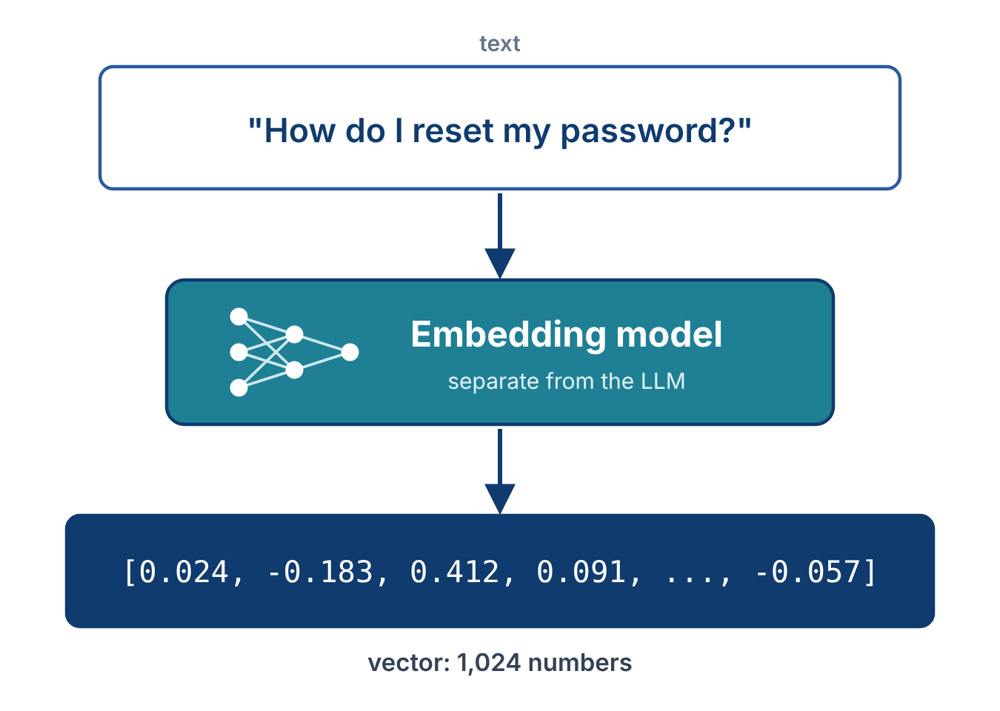

class: center, middle, inverse count: false # Embeddings, Similarity, and Vector Storage ??? ~22 minutes. The deep dive on the most common RAG implementation. Be explicit throughout that this is one approach — Lecture 8.3 covers the others. --- # The Most Common RAG Implementation Lecture 8.1 established RAG as a category and vectors as one implementation. This lecture covers that implementation in depth, because it dominates production RAG systems. The pieces: - **Embeddings** — turn text into vectors - **Storage** — find the closest vectors, at scale - **Chunking** — prepare documents for embedding - **The pipeline** — how these pieces connect to the LLM ??? 30 seconds. Frame as the deep dive. Reinforce that this is one approach among many. --- # Where Vector Databases Fit <img src="vector-rag-pipeline.png" style="max-width:100%; display:block; margin:0.5em auto;"/> ??? 90 seconds. Same pipeline as Lecture 8.1, with a vector database as the searchable source. Walk the setup row once: articles are chunked, each chunk is embedded, and the vectors are stored with their text. Then walk the query: the question is embedded, the database returns the two closest chunks as text, and that text goes into the context. The rest of this lecture explains each box. This is the retrieve-first wiring; later in this lecture the same search is wired as a tool. --- # Embeddings: One Idea, Two Uses An **embedding** is a list of numbers that represents the meaning of text. - **Inside every LLM** — each token becomes a vector before the model processes it. This is the "text converted to numbers" step from Lecture 2.1. - **In an embedding model** — a separate, smaller model turns a whole passage into one vector, built for comparing meaning .info[Same idea, different models, different jobs. RAG uses the second kind.] ??? 90 seconds. Name the confusion directly: students see embeddings in LLM explanations and in vector database tutorials and assume they are the same thing. The idea is shared; the models are separate. Everything in this lecture is about the second kind. The LLM's internal embeddings never leave the model. --- # Text as a Vector .split-left[ An **embedding** is a numerical representation of text, produced by an embedding model. Input: text. Output: a fixed-length list of numbers (a vector). Modern embeddings: 768 to 3,072 dimensions. Each dimension is a learned feature. Together they encode meaning. The numbers themselves are not interpretable. What matters is that two pieces of text with similar meanings produce vectors close to each other in this space. ] .split-right[ <p></p> ] <div class="clear"></div> ??? 90 seconds. Show the input/output of an embedding model without going into how it works internally. Image prompt for `embedding-vector.png`: "A horizontal flow diagram. Left side: a rounded rectangle containing the text 'How do I reset my password?'. An arrow pointing right to a rounded rectangle labeled 'Embedding model' (with a small icon suggesting a neural network). An arrow pointing right to a rounded rectangle containing a row of small numbers like '[0.024, -0.183, 0.412, 0.091, -0.248, ..., -0.057]' with the label '1024 numbers' below it. Clean flat design, white background, sans-serif labels, teal/blue color palette. The numbers in brackets should be in a monospace font." --- # How Embedding Models Are Trained Embedding models are trained with **contrastive objectives**. - Pairs of texts that should be similar (a question and its answer, two paraphrases) are pushed close together in vector space - Unrelated pairs are pushed apart The result: a model that maps text to vectors in a way that preserves semantic similarity. .info[The embedding model is a separate model from the LLM. The embedding model represents; the LLM generates. Different model, different purpose.] ??? 60 seconds. Students often confuse the embedding model with the LLM. Make the distinction clearly. --- # Similar Meanings, Similar Vectors .split-left[ Every piece of text becomes a point in high-dimensional space. Points cluster by meaning. - "How do I reset my password?" and "I forgot my password, how can I recover it?" land near each other - "How do I reset my password?" and "What is the capital of France?" land far apart Retrieval: take the user's query, embed it, find document vectors closest to the query vector, return those documents. Closeness is measured with **cosine similarity**: 1 means same meaning, 0 means unrelated. Libraries compute it for you. ] .split-right[ <img src="semantic-space.png" style="max-width:95%;"/> ] <div class="clear"></div> ??? 90 seconds. The geometric picture is the most useful intuition. Real embeddings are 1024-dim or so; the 2D picture is a projection that preserves the clustering idea. Name cosine similarity and move on; no math. Image prompt for `semantic-space.png`: "A 2D scatter plot showing points in semantic space. Three distinct clusters: (1) a cluster of three or four labeled points like 'reset password', 'forgot password', 'recover account', 'change password' grouped tightly together, (2) a cluster of points labeled 'pricing plans', 'subscription cost', 'how much does it cost' grouped together but far from the first cluster, (3) one isolated point labeled 'capital of France' on the other side of the plot. Each cluster a different color. Axes are unlabeled (dimensions are abstract). Clean flat design, white background, sans-serif labels." --- # Why This Beats Keyword Search Keyword search fails when query and document use different words for the same idea. > Query: "Password reset" > Document title: "Recovering account access" > Keyword match: **none** Embedding-based search compares **meaning**, not words. Both query and document are mapped to vectors based on what they mean — the words don't have to match. This is the practical reason embeddings dominate RAG: paraphrase and synonym handling that breaks keyword search. ??? 60 seconds. The practical payoff. Once students see this, they understand why everyone uses embeddings for unstructured retrieval. --- # Embedding APIs Embedding is a hosted service for most production use: - **Voyage AI** — Anthropic's recommended embedding partner - **OpenAI** — `text-embedding-3-small`, `text-embedding-3-large` - **Cohere** — multilingual support, reranking models alongside The API call is simple: send text, receive a vector. Cost: roughly $0.02-$0.13 per million tokens — about 1/100th the cost of generation. ??? 60 seconds. Brief survey. Don't go deep on any one provider. --- # Pick One and Commit .warning[Embeddings from different models live in different vector spaces. A vector from Voyage cannot be compared to a vector from OpenAI — they don't share a coordinate system.] The choice of embedding model is **sticky**: - Once your corpus is embedded, switching means re-embedding everything - Pick a model that fits your domain and budget - Stick with it until you have a clear reason to change ??? 60 seconds. The "vectors don't cross models" point catches students off guard. Important for cost and architecture planning. --- # What Vector Databases Add A **vector database** stores each vector with its original text and finds the vectors closest to a query. Common choices: ChromaDB, FAISS, Pinecone, pgvector. - **Indexing** — approximate nearest neighbor (ANN) algorithms like HNSW find the closest vectors without checking every one. A small accuracy cost for a large speed gain. - **Persistence** — vectors live on disk, survive restarts, can be backed up - **Metadata filtering** — filter the search by metadata (source, date, author) as well as similarity .info[A vector database knows nothing about LLMs. It is a search index for vectors.] ??? 90 seconds. Stress the info box: the database is a general search tool. It returns text; it never talks to the model. ChromaDB is the easy on-ramp (local, no infrastructure); Pinecone is a managed service. --- # Why Chunk .split-left[ Documents are usually too large to embed as a single vector. A 50-page PDF as one vector loses all granularity — the resulting vector "averages" everything and matches poorly to specific queries. Chunking splits documents into smaller units. Each chunk is embedded separately. Retrieval returns matching chunks, not whole documents. Two reasons: - **Granularity** — the user's query is usually about a specific section - **Window fit** — retrieved chunks have to fit in the context window, often alongside several others ] .split-right[ <img src="chunking.png" style="max-width:95%;"/> ] <div class="clear"></div> ??? 90 seconds. Why chunking exists at all. The image makes the splitting concept concrete. Image prompt for `chunking.png`: "A diagram showing a long document on the left being split into smaller chunks on the right. Left: a tall rounded rectangle representing a long document (use placeholder lines suggesting text). An arrow points right. Right: four to five smaller rounded rectangles stacked vertically, each labeled 'Chunk 1', 'Chunk 2', etc. Adjacent chunks share a small overlapping region (slightly darker color band where they overlap), with one of these overlaps labeled 'overlap'. Clean flat design, white background, sans-serif labels, teal/blue color palette." --- # Three Common Strategies | Strategy | How | Best for | |---|---|---| | **Fixed-size** | Split every N tokens (~500-1,000) | Uniform corpora, simplest | | **Sentence/paragraph** | Split on natural boundaries | Prose, documentation | | **Semantic** | Split where topic changes | Long-form with clear shifts | **Chunk overlap.** Adjacent chunks usually overlap by 10-20%. Prevents an answer from being split awkwardly across the boundary. .callout[Use library defaults until you have a measured reason not to. The more common retrieval problems are bad embeddings, bad reranking, or bad query phrasing — not bad chunking.] ??? 90 seconds. The practical guidance is the most important point on this slide. Students over-engineer chunking; the defaults are usually right. --- # Vector Search Can Also Be a Tool <img src="rag-agent-loop.png" style="max-width:88%; display:block; margin:0.2em auto;"/> .callout[Run the search before the LLM call, give the LLM a search tool, or do both. Each has strengths (Lecture 8.1).] ??? 2 minutes. The pipeline on slide 3 ran the search before the LLM call. Here the same search is a tool the LLM drives, in the agent loop from Lecture 6.1. Walk the numbers. (1) Send the messages. (2) The model asks for search_docs with a query string. (3) Your code embeds the query, searches the vector database, and returns the chunk text as a tool_result. The loop sends again. (4) The model answers. To the LLM, search_docs looks the same as read_file: a tool call out, text back. Neither wiring is the right one. Searching first is simple and predictable. A tool lets the model decide when to search and write its own query. Doing both is common: search first to seed the context, and keep the tool so the model can search again if the first results miss. --- # When Vector RAG Fits **Fits well:** - Large unstructured corpus — documents, articles, knowledge bases, codebases - Semantic queries — query and document use different words for the same idea - Privacy matters — your data stays in your vector store - Repeat queries — embedding cost amortized over many queries **Fits poorly:** - Structured data → use a database - Information must be fresh by the second → re-indexing has latency - Tiny corpus → dict, or just send it all in the prompt - Need exact-match precision → keyword search may do better ??? 60 seconds. The fit/misfit table sets up Lecture 8.3 — the misfit cases are where other retrieval methods shine. --- # Key Takeaways 1. **Embeddings represent meaning as vectors** — LLMs use them internally; a separate embedding model produces them for search 2. **Similar meanings, similar vectors** — retrieval finds the vectors closest to the query, scored by cosine similarity 3. **Vector databases** — store and search vectors at scale; they know nothing about LLMs 4. **Chunking** — necessary for granularity and window fit; library defaults are usually right 5. **The LLM never sees a vector** — retrieval returns text, and that text goes into the context ### Next: vector RAG is one mechanism. The others. ??? Transition to 8.3.